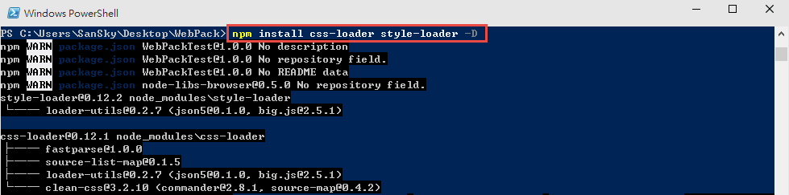
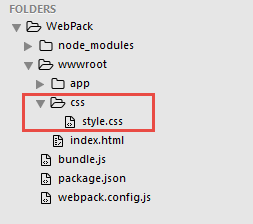
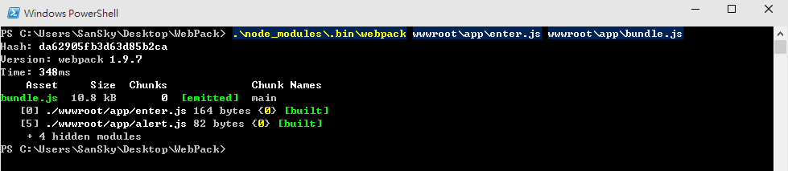
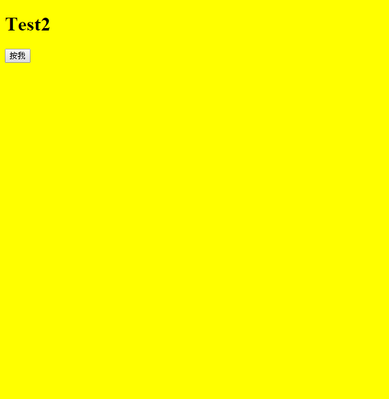
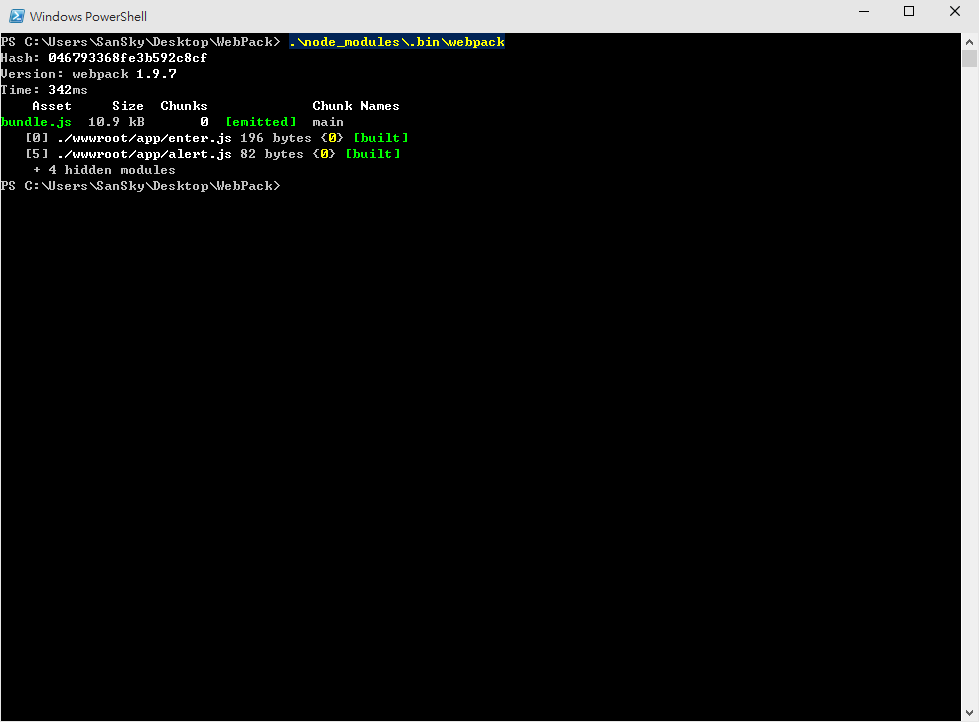

上一章節，我們簡單的介紹了 Webpack 與實作，大家也感受到了 Webpack的強大威力；但是，大家應該也知道，Webpack 不只是只能載入 js 檔案而已，而這篇，我們就來看看，如何讀入 css 檔案，並且看看 config 該如何設定?
使用 Loader 載入 CSS
首先，我們要先使用 npm 來取得 css-loader 和 style-loader ，這兩個套件就是處理 css的 關鍵。
1 | npm install css-loader style-loader -D |
完成後如下圖。

新增 css 檔案
接下來，我們建立一個新的 css 檔案，到 wwwroot 之下，這邊建立在 css 的目錄下，如下圖，這個目錄結構基本上是沒有特別有甚麼用意，大家可以自行選擇要放置的位置。

style.css 裡面的內容如下，我們預期希望背景變成黃色。
1 | body { |
修改 enter.js 檔案
接下來，我們在原本的 enter.js 檔案的第一行加上 require(“!style!css!../css/style.css”); ，前面的 !style!css! 表示要載入 css ，後面則是 style.css 的相對路徑。
1 | require("!style!css!../css/style.css"); |
執行 Webpack
如前面一樣，完成之後，就可以執行 Webpack 了
1 | .\node_modules\.bin\webpack wwwroot\app\enter.js wwwroot\app\bundle.js |
完成如下圖。

接下來，我們就可以去 index.html 看一下，背景是否變成黃色了

基本上，這樣就完成了 css Loader 的基本使用。
另外，根據官網的教學，大家也可以使用這種方式。
1 | //require("!style!css!../css/style.css"); |
而指令的部分如下；簡單的說，就是把style!css!搬到指令這邊。
1 | .\node_modules\.bin\webpack wwwroot\app\enter.js wwwroot\app\bundle.js --module-bind |
基本上，上面兩種方式，呈現的效果是一樣的….而對小弟來說，小弟會比較喜歡等下講解到的 config 方式。
設定 config
大家應該會覺得，誰會記住那麼多參數!!!?，所以其實 Webpack 預設有提供設定檔，所以我們就在在外層的根目錄下建立 webpack.config.js
而 webpack.config.js 內容如下，裡面的內容，有沒有很熟悉的感覺?
entry就是進入點，output就是輸出的位置，__dirname 則是預設變數，代表目前的目錄位置，也就是 wwwroot/app ，而 filename 就是綁完之後的檔案名稱；那 css 勒? 就是底下的 module 的部分。
1 | module.exports = { |
接下來，我們只要輸入，後面的參數通通不用了!!
1 | .\node_modules\.bin\webpack |
完成後如下圖。

從 npm 執行
但是，大家可能會注意到，我們還是要輸入 .\node_modules.bin\webpack 實在是很麻煩，所以最後一步驟，就是編輯 package.json 檔案。
我們在 scripts 裡面的 test 底下，多增加 “start”: “.\node_modules\.bin\webpack” 這行。
1 | { |
接下來，我們就可以使用
1 | npm run start |
來執行嚕!!~
watch
最後，人的懶惰是無止境的，每次改完還要輸入 npm run start 也是很麻煩的，所以最後再小小的介紹一下 watch ，他可以自動監控，當有修改的時候，自動執行 Webpack 喔!
我們把 package.json 的內容再調整一下。
在原本的 start 那行，最後加上 – watch
1 | { |
完成後，我們就可以修改看看 js 檔案 或是 css 檔案，例如把原本的背景改成紅色，當存檔的時候，我們就可以看到，Webpack 自動被觸發了!~

參考資料
- https://leanpub.com/survivejs_webpack/read
- http://webpack.github.io/docs/
- http://segmentfault.com/a/1190000002551952
- https://github.com/petehunt/webpack-howto
- http://segmentfault.com/a/1190000002552008
- https://medium.com/html-test/webpack-%E7%9A%84%E5%9F%BA%E6%9C%AC%E5%B7%A5%E4%BD%9C%E6%B5%81%E7%A8%8B-585f2bc952b9